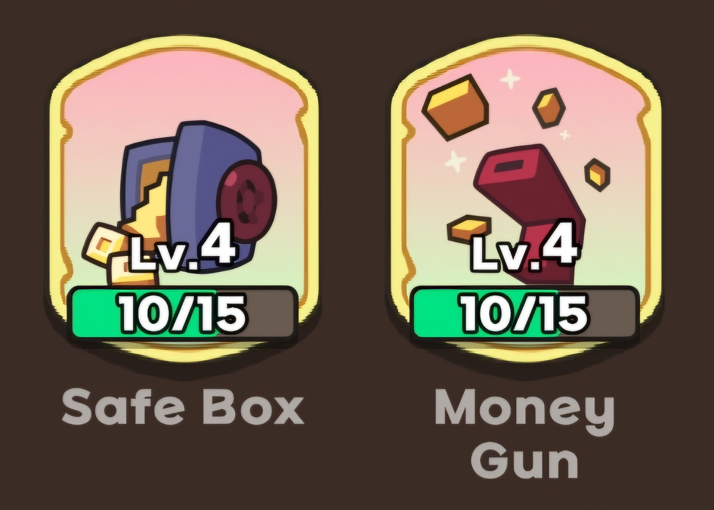
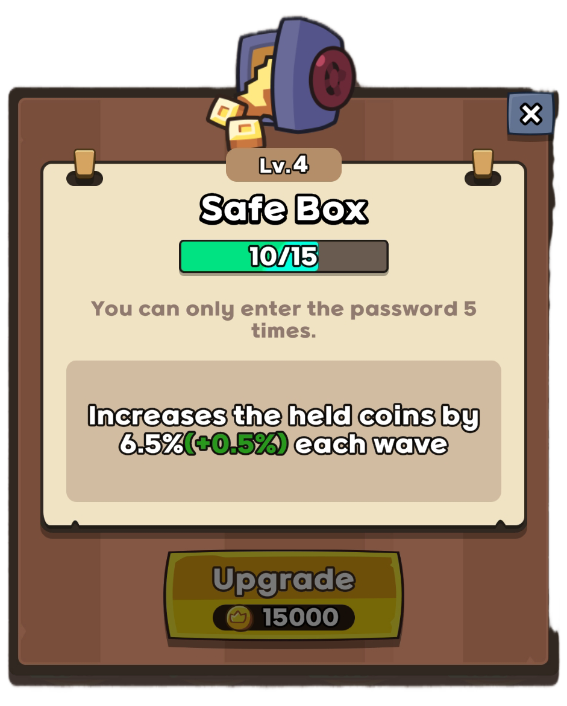
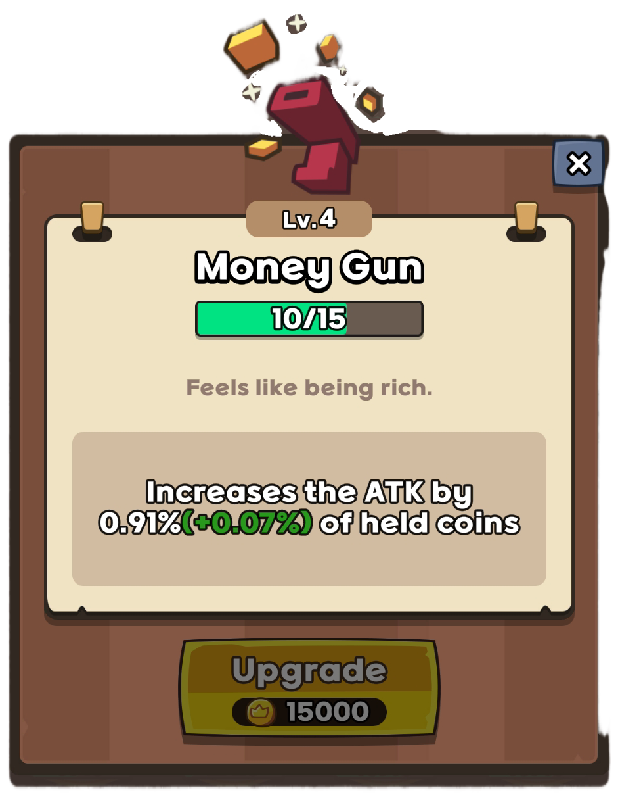

What does sb/mg stand for?
Sb/mg stands for "Safe Box and Money Gun". These are artifacts you can unlock with keys. When you see people say "You need at least 7/7 sb/mg for hell mode" for example, what they're saying is to clear hell mode you need your Safe Box and Money Gun artifacts to both be at least level 7.
Why are these artifacts so powerful?
Safe Box and Money Gun synergize together in a way that can give you massive bonuses to you damage. Below are pictures of these artifacts so you can see what they do
 How to get 100k+ gold using Safe Box
The basic idea is to avoid spending gold, and just gamble for most of the first half of the game. The more gold you have, the more money Safe Box gives you at the end of a wave. How much gold can you get from this? Well theoretically, let's say you have 100 gold. Let's also say there are NO enemies being killed, so your only source of gold is Safe Box every way. This is how much money you would earn with Safe Box after 80 waves
- Level 1 SB - 4,956 gold
- Level 2 SB - 7,247 gold
- Level 3 SB - 10,579 gold
- Level 4 SB - 15,415 gold
- Level 5 SB - 22,423 gold
- Level 6 SB - 32,559 gold
On top of this, you also get a lot of gold from defeating enemies. If you can build up to at least 10k gold by wave 30, you can start to spend a little bit more on summons. Still try to keep most of your gold for Safe Box growth if you don't need to be spending it. Why keep such a ridiculously large stockpile of gold when you could spend it getting more mythics?